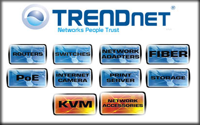
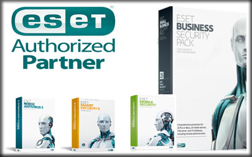
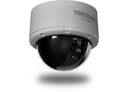

Our Services
- 
- 
Small to midsized businesses have been left out of the IT loop in the past due to cost constraints and network complexities. But with the increasing dependence on electronics and technology in general - computers, PDAs, e-mail, and Internet - even today's smallest business cannot afford to put off finding a network solution as soon as possible. Whether you need a few computers connected or you're looking for an entire networking plan that allows for growth and expansion, Prism Automation Systems has a networking solution that is right for you. Our networking solutions for SMB allows you many flexible options so you can be competitive. We also design and build the network that will change with your needs and growth. SMBs can take advantage of our network solutions:
Foolproof Enterprise Networking Solutions Multi-site enterprises depend almost exclusively on their technology to carry their business forward in fiercely competitive markets - and with good reason. Managing a big business today is not like it used to be. Communications, presentations, research, and file sharing all occur via myriad devices like mobile phones, PDAs, laptops, wireless Internet or their cabled counterparts. Whatever industry you conduct business in, enterprise networking solutions by Prism Automation Systems can make your system foolproof to help you avoid mistakes and setbacks during your critical everyday business dealings. We provide the fast thinking and 24/7 global support so no matter where you are in the world, Prism Automation Systems is your trusted ally.

Our expertise in security solutions and security solutions is not just limited to businesses. We also have a great deal of experience installing and implementing customized home security solutions. Our main products are IP Camera , Network Camera, IP Infrared Camera, IPDome Camera, Wireless IP Camera and Network Video Server, These products have been widely used in public safety, such as airport, station, banks, schools, armed forces, power plant, power supply center, oil storage center, factories, mines and other enterprises and residential zones to achieve the goal of surveillance.

Businesses big and small can discover the cost-effective, headache-reducing benefits of networking solutions by Prism Automation Systems.